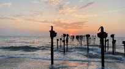
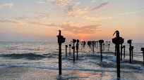
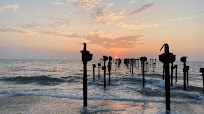

Alleppey is a city and a municipality in Kerala with an urban population of 174,164 and ranks third among the districts in literacy rate in the state. Alappuzha is a city in Kerala, India. It is the administrative headquarters of the Alappuzha district. Alappuzha is considered as the oldest planned city in the region. It is one of the most popular tourist attractions in Kerala. The city is located in the coastal region of Laccadive Sea. In 2016, the Centre for Science and Environment rated Alappuzha as the top cleanest town in India.Besides backwaters and the sea, Alleppey is also famous for its ageless temples, serpentine canals draining into the ocean, colorful lagoons, rice paddies, and a 150-year old lighthouse.History says Alappuzha had trade relations with ancient Greece and Rome in B.C and in the Middle Ages. Carved out of erstwhile Kottayam and Kollam (Quilon) districts, Alleppey district was formed on 17th of August 1957. The name of the district Alleppey, the anglicized form was changed as 'Alappuzha' as per GO(P) No.The residents of Alleppey are close to nature and have a preference of a simple, healthy and peaceful lifestyle. Their traditional outfit of Alleppey is white Mundu and Neriathu; a plain white dhoti embroidered with golden silk lining for men and cream colored sari with golden border for women.
